Chapter 9 Visualising data with ggplot2
In this chapter you will be guided through using the ggplot2 package to make some pretty plots. You will therefore need the ggplot2 package to make this work. Remember, you can load packages like this:
We will use the SDU birds clutch size data that we produced at the end of the “[Data wrangling with dplyr]” chapter for these examples. You can find the data set via the Course Data Dropbox link.
Remember to set your working directory, and start a new script. I am assuming that you have saved your data in a folder called “CourseData” inside your working directory.
9.1 Histograms
The ggplot function expects two main arguments (1) the data and (2) the aesthetics. The aesthetics are the variables you want to plot, and associated characteristics like colours, groupings etc. The first argument is for the data, then the aesthetics are specified within the aes(...) argument. These usually include an argument for x which is normally the variable that appears on the horizontal axis, and (often) y which is usually the variable on the vertical axis. The details of this depend on the type of plot you are making.
After setting up the plot the graphics are added as geometric layers or geoms. There are many of these available including geom_histogram, geom_line, geom_point etc.
I will illustrate the construction of a simple plot by making a histogram of the clutch size of all the nests in the dataset.
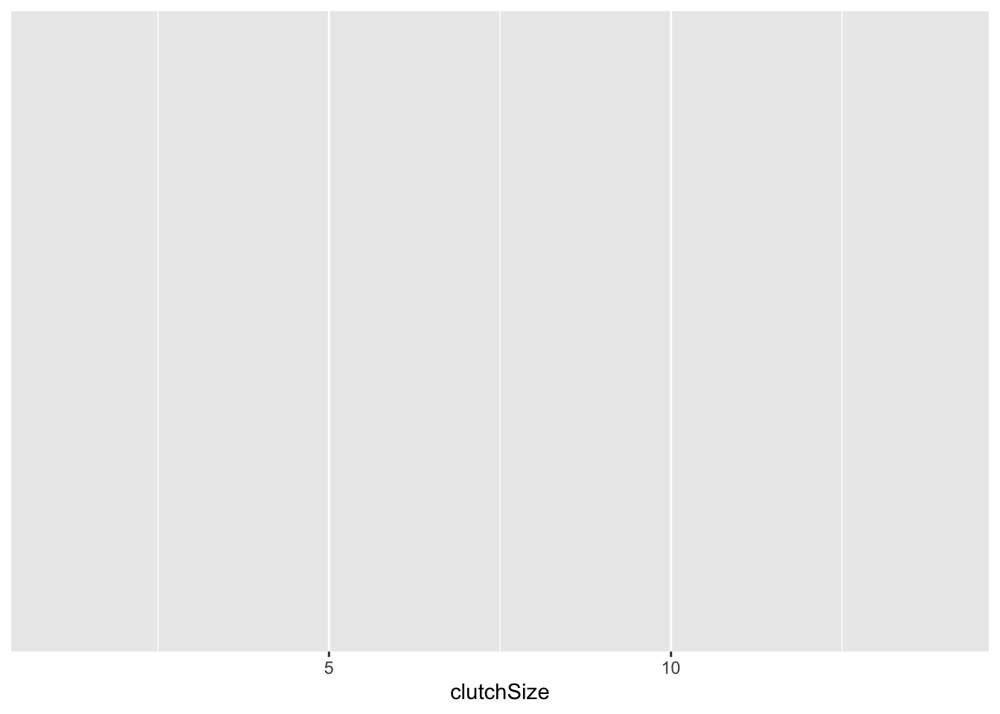
This produces an empty plot because we have not yet specified what kind of plot we want. We want a histogram, so we can add this as follows. I have set binwidth to be 1 because we know we are dealing with counts between just 1 and 14. Try altering the binwidth.
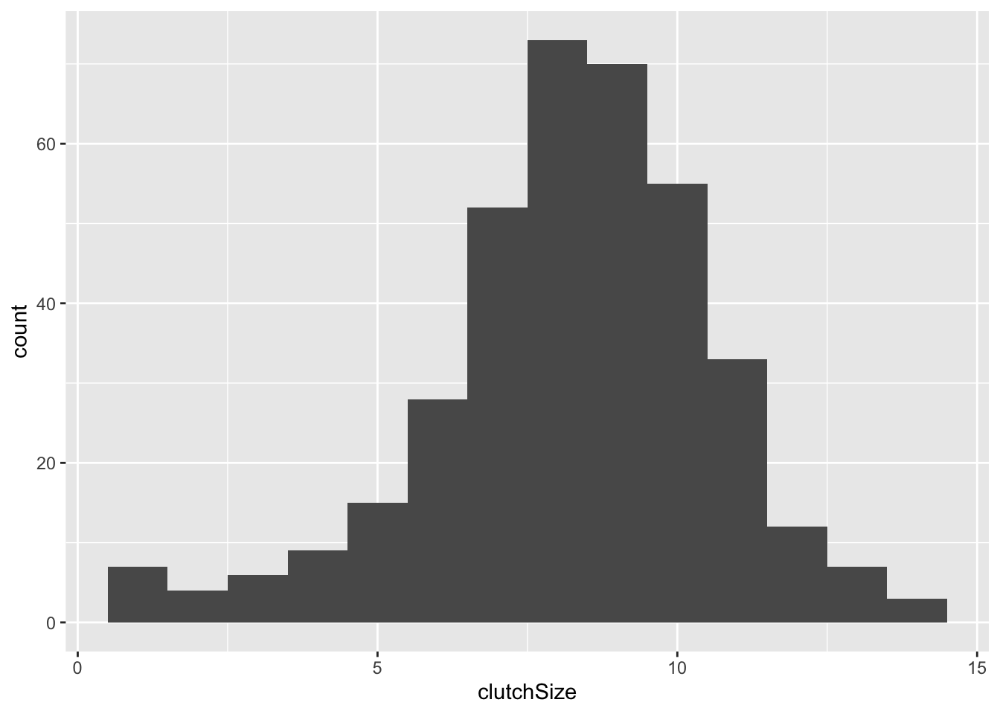 We know that we have two species here and we would like to compare them. This is done within the aesthetic argument. The default is that the bars for different categories are stacked on top of each other. This is good in some cases, but probably not here.
ggplot(clutch, aes(x = clutchSize, fill = species)) +
geom_histogram(binwidth = 1, position = "dodge")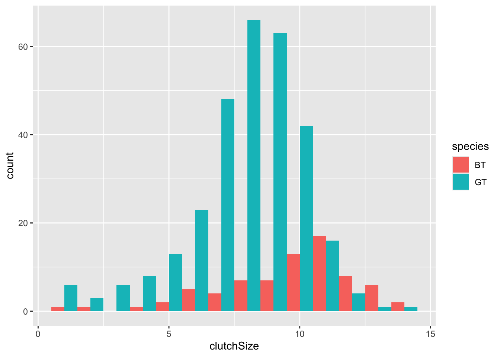
You can immediately see that there are far fewer blue tit nests than great tit ones. But you can also see that the centre of mass for blue tits is further to the right than great tits.
To make it easier to compare distributions with very different counts, we can put density on the y-axis instead of the default count using the argument stat(density).
ggplot(clutch, aes(x = clutchSize, fill = species, stat(density))) +
geom_histogram(binwidth = 1, position = "dodge")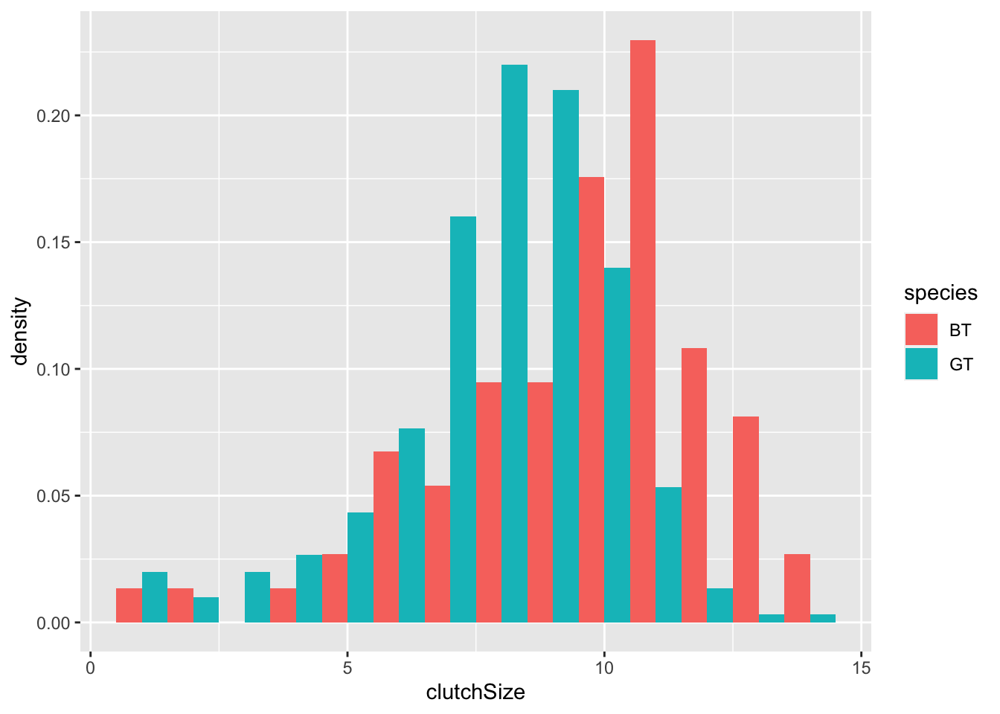
An alternative approach would be to overlay the two sets of bars (using position = "identity") and set the colours to be slightly transparent (using alpha = 0.7) so that you can see the overlapping region clearly.
ggplot(clutch, aes(x = clutchSize, fill = species, stat(density))) +
geom_histogram(binwidth = 1, position = "identity", alpha = 0.7)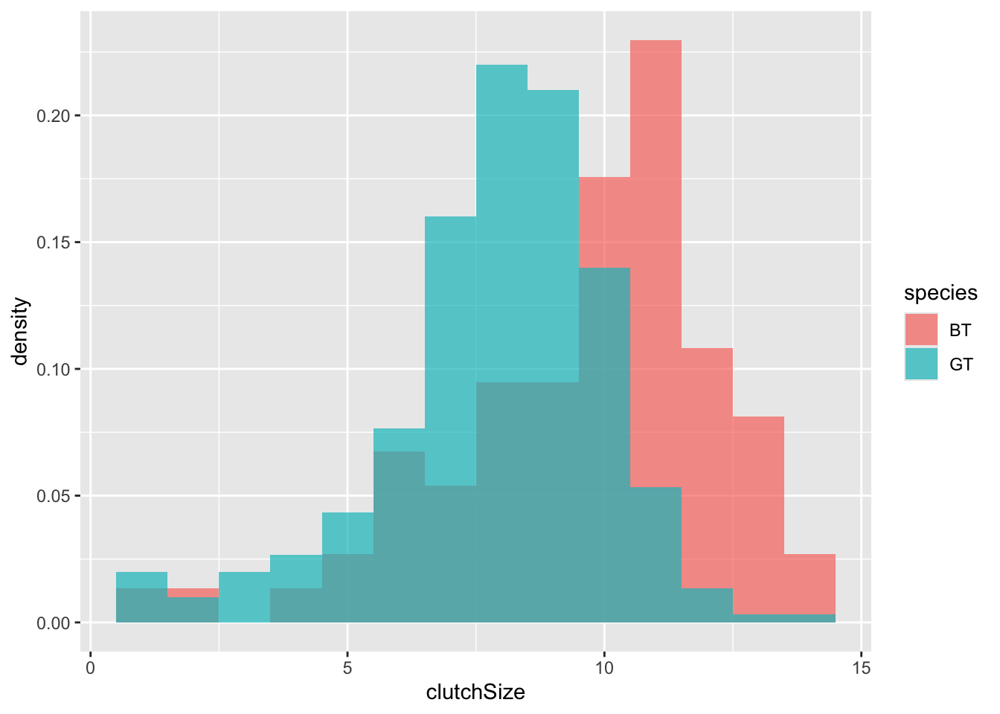
It is very clear from this plot that blue tits tend to have bigger clutch sizes than great tits. Is this difference statistically significant? We will look at testing this in a future class - for now we will be satisfied with our visualisation.
9.2 “Facets” - splitting data across panels
You should recall that there were several years of data represented here.
ggplot has a very clever way of splitting up the plot to examine this.
ggplot(clutch, aes(x = clutchSize, fill = species, stat(density))) +
geom_histogram(
binwidth = 1, position = "identity",
alpha = 0.7
) +
facet_grid(. ~ Year)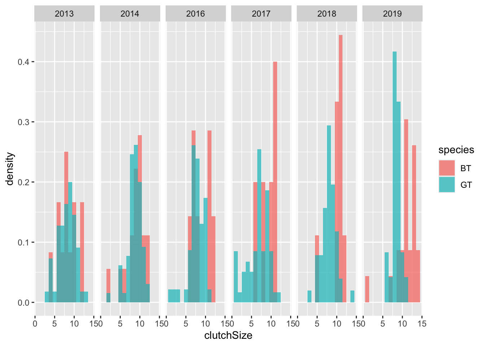
You could split the data up by species in a similar way, as yet another way of visualising the difference between species:
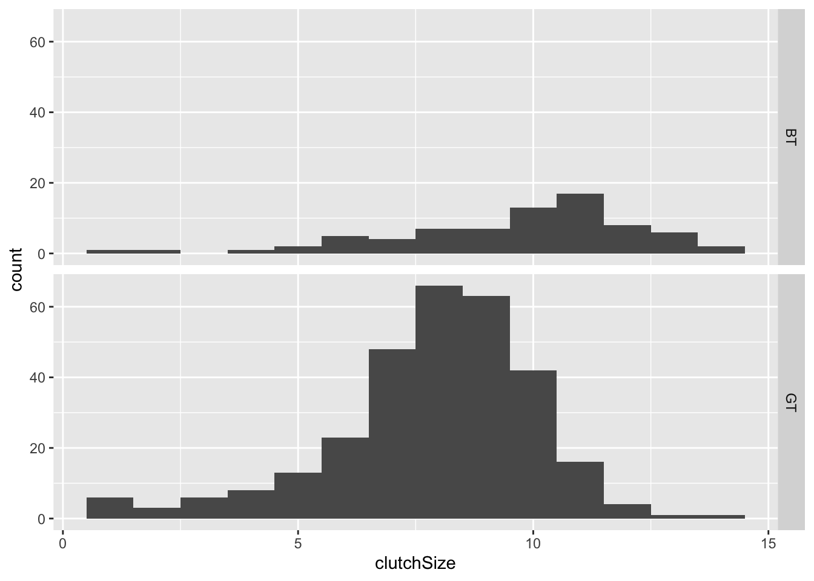
You can change whether the separate graphs are presented in a rows or
columns by changing the order of the argument:
facet_grid(species~.) or
facet_grid(.~species). Try it.
9.3 Box plots
Box plots are suitable for cases where one variable is categorical with 2+ levels, and the other is continuous. Therefore, another way to look at these distributions is to use a box plot.
In a box plot the box shows the quartiles (i.e. the 25% and 75% quantiles) within which 50% of the data are found. The horizontal line in the box is the median, Then the whiskers extend from the smallest to largest value unless they are further than 1.5 times the interquartile range (the length of the box) away from the edge of the box, in which case they are individually shown as outlier points.
To plot them using ggplot you must use a geom_boxplot layer.
The categorical variable is normally placed on the x-axis so is placed as x in the aes argument, while the continuous variable is on the y axis.
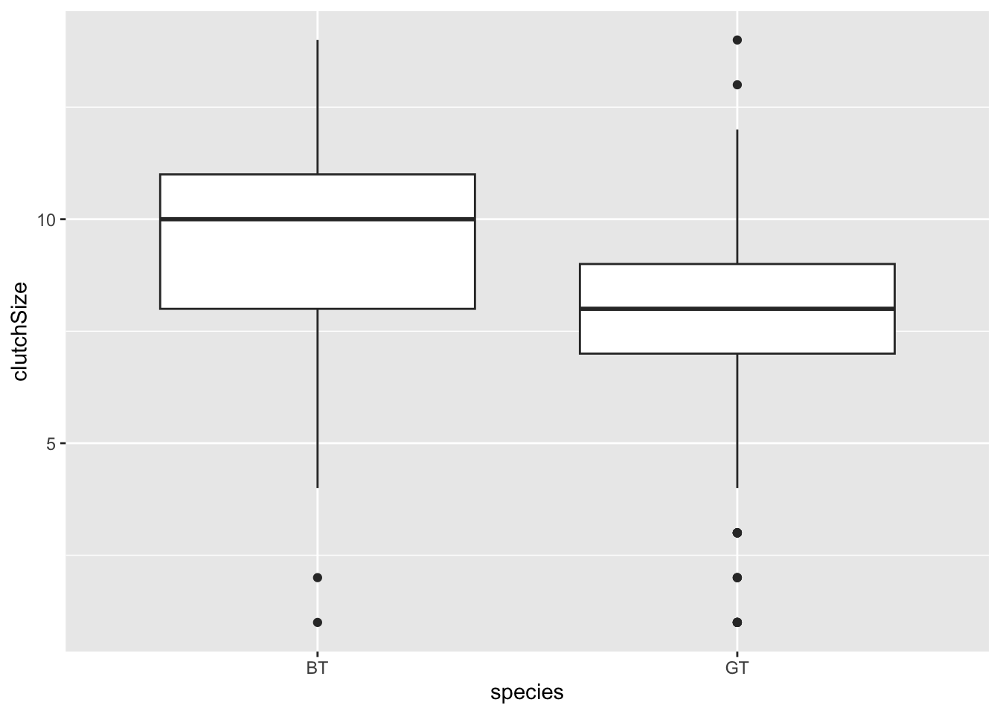
Some researchers argue that it is a good idea to add the data as points to these plots as “full disclosure” of what the underlying data look like. These can be added with a geom_jitter layer (jitter is random noise added in this case to the horizontal axis). You should set width and alpha arguments to make it look nice.
ggplot(clutch, aes(x = species, y = clutchSize)) +
geom_boxplot() +
geom_jitter(width = .2, alpha = 0.5, colour = "black", fill = "black")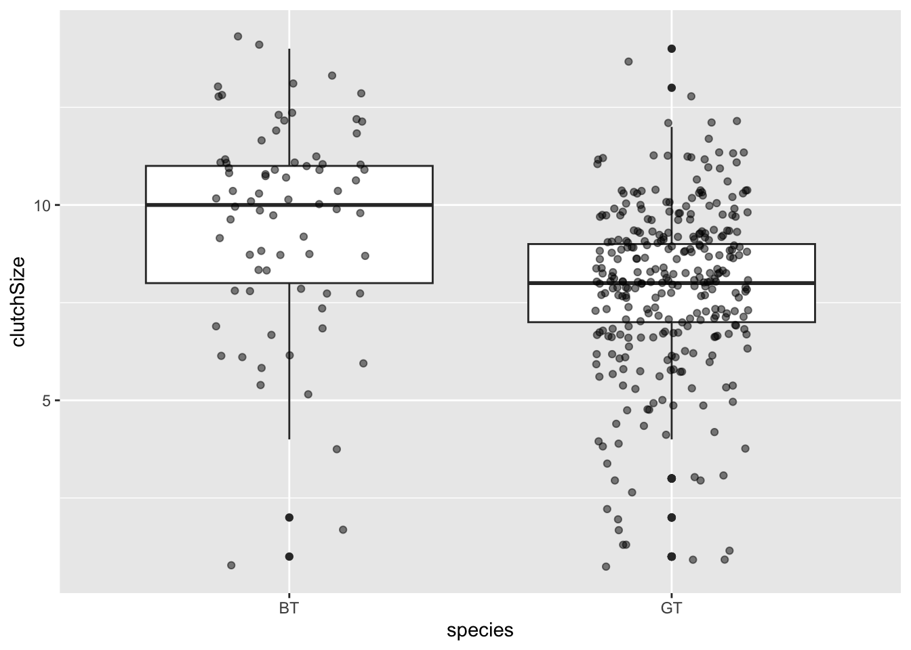
Try splitting the data into different years using
facet_grid with the box plot.
9.4 Lines and points
Perhaps not surprisingly lines and points can be added with the geoms, geom_line and geom_point respectively.
To illustrate this we will make a plot showing how clutch size changes among years.
First we will use summarise to create a dataset with the mean clutch size. We’ll start simply, by looking at only great tits.
GTclutch <- clutch %>%
filter(species == "GT") %>%
group_by(Year) %>%
summarise(meanClutchSize = mean(clutchSize))Then you can plot this like this.
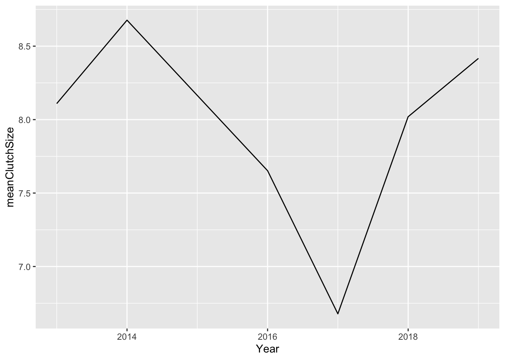
I think this looks OK, but we should add both species. I’ll first need to produce a mean clutch size dataset that includes both species.
Now I can do the plot again. The only difference to the command is that I need to tell R that I want to colour the lines by species (colour = species).
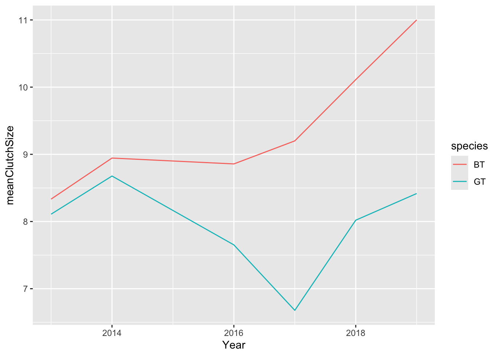
I can improve on this by (1) changing the y axis limits (using ylim) so that it goes through the full range of my data (0 - 14); (2) adding points (using a geom_point layer) where my actual data values are; (3) adding a nicely formatted axis label (using ylab); adding a title (ggtitle)
ggplot(meanClutch, aes(
x = Year, y = meanClutchSize,
colour = species
)) +
geom_line() +
geom_point() +
ylim(0, 14) +
ylab("Mean clutch size") +
ggtitle("Clutch size data from SDU Campus")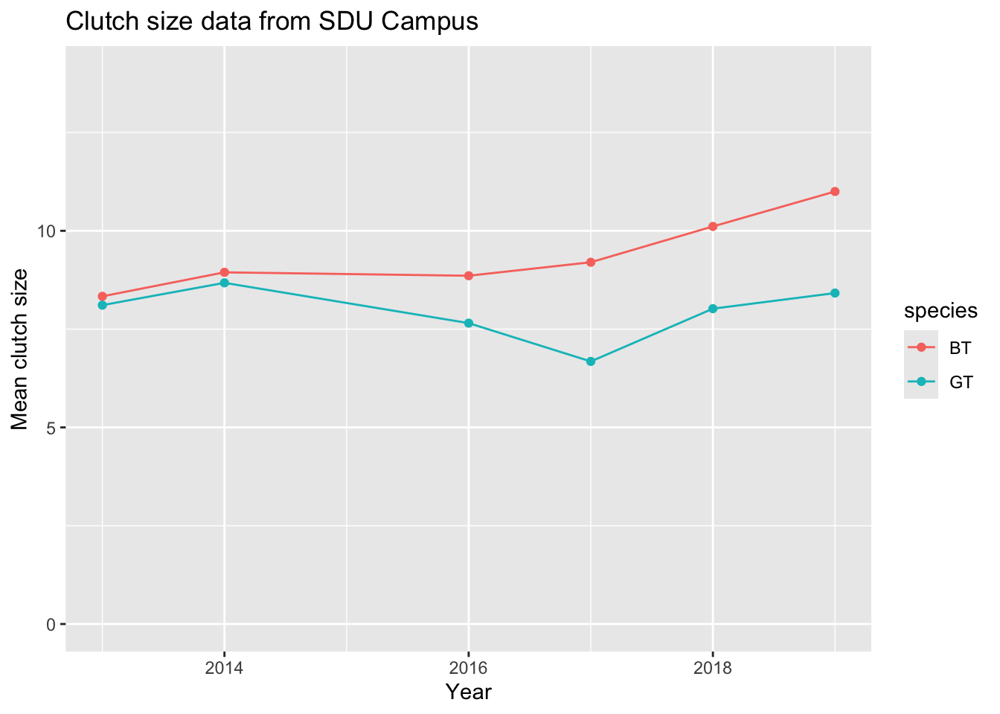
9.5 Scatter plots
Let’s now make a scatter plot. The SDU bird data are not suitable for this type of plot so we’ll use the data from a few days ago on suburban bird diversity.
Take a look at the data to remind ourselves what it looks like
## Name Year HabitatIndex nIndividuals nSpecies
## 1 Alamotos 1946 10.0 48 12
## 2 Ramona 1946 9.5 30 13
## 3 Verona 1947 9.5 38 15
## 4 Valle Vista 1950 9.5 42 11
## 5 La Gonda 1955 11.0 44 13
## 6 Belgian 1956 9.0 27 14These data show the result of standardised bird surveys at housing developments of different ages in California. The surveys were carried out in 1975, and the data includes the Year and number of individual birds seen nIndividuals and number of species seen nSpecies. The question being addressed is “How does the age of the housing development affect the number of species?”
To investigate this we should first add a new variable for Age to the data set. We can do this using the mutate function from dplyr. This function creates new variables, for example by manipulating existing ones.
When we have created this variable we can plot the data. For aesthetic reasons I also would like to set the limits on the y-axis to go extend to zero, and I would like to include proper labels on the axes.
ggplot(birds, aes(x = Age, y = nSpecies)) +
geom_point() +
ylim(0, 15) +
xlab("Age of development") +
ylab("Bird species richness")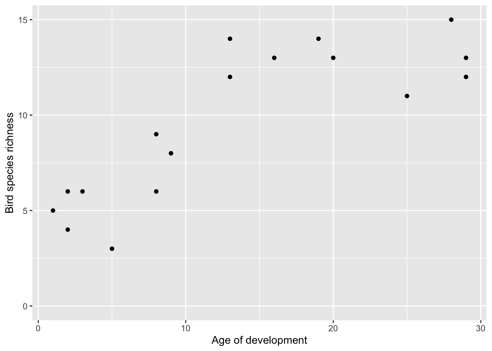
This shows very clearly that older developments have more species, but it also appears to show that there is an asymptote around 13 species.
Compare this plot to the one you made with base graphics in a previous class.
9.6 Bar plots
Finally, another common type of plot is the bar plot. These are often used poorly.
TLDR: you should probably be using box plots or line/point plots. Consider carefully!
Bar charts are originally intended to represent categorical variables, but they are frequently employed to display continuous data. When bar charts are used for continuous data, they often serve as “visual tables” that typically depict the mean (and sometimes a measure of variation such as standard error or standard deviation). However, this approach presents some issues.
Firstly, various data distributions can yield the same bar chart, and analyzing the complete dataset may lead to different conclusions compared to relying solely on summary statistics. For example, it is perfectly possible for several markedly different distributions to have very similar mean values: a bar chart would erroneously show them as being similar when they were not.
Secondly, summarizing data using the mean and measures of variation can mislead readers into assuming that the data follow a normal distribution without any outliers. These statistics can distort the data, particularly in studies with small sample sizes where outliers are common and there isn’t enough data to assess the distribution of the sample. For example, a bar chart with standard error bars can hide the fact that the data might be skewed.
Figure 9.1 illustrates this with two plots showing two distributions, G1 and G2: Plot A is a classic bar plot with standard error bars, and plot B is a box plot with jittered points placed on top. There are differences in the distributions of data in G1 and G2 (G2 is skewed, and includes an outlier). This difference between distributions is captured quite well in plot B (even without the addition of the jittered points, look at the “whiskers” of the box plot), but is not captured well with plot B.
Box plots are simply better than bar plots (unless you are trying to hide something!).
Figure 9.1: Problems with bar plots.
Furthermore, using bar charts to display paired or non-independent data poses an additional problem. Figures should ideally convey the study’s design. Bar charts of paired data inaccurately imply that the compared groups are independent, and they fail to provide information about whether changes are consistent across individuals.
These issues are covered in detail in Weissgerber et al. (2015)7.
The short version is that in MOST cases, when you think you should use a bar plot, you should really be using a box plot with jittered points (see above).
So when CAN you use bar plots?
I would argue that bar plots can be useful for presenting summaries of counts. For example, sample sizes.
Next we can summarise the data to get the sample sizes for each year
##
## BT GT
## 74 300## Var1 Freq
## 1 BT 74
## 2 GT 300Here’s how to plot these data in ggplot, using geom_bar. The stat = "identity" argument tells ggplot2 to use the actual values from the data column for the height of the bars.
ggplot(sampleSize, aes(x = Species, y = SampleSize)) +
geom_bar(stat = "identity") +
labs(title = "Barplot Example", x = "Category", y = "Sample Size")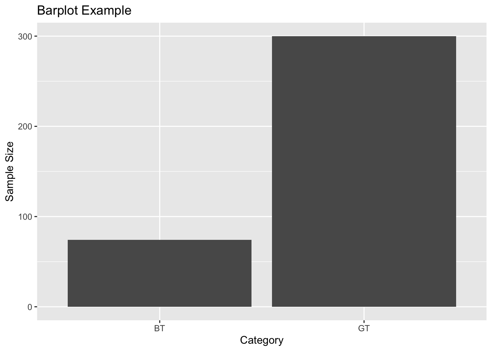
With the same data set you might think about making a bar plot for sample size per year like this
## Var1 Freq
## 1 2013 67
## 2 2014 83
## 3 2016 53
## 4 2017 64
## 5 2018 60
## 6 2019 47#rename columns
names(sampleSize) <- c("Year", "SampleSize")
ggplot(sampleSize, aes(x = Year, y = SampleSize)) +
geom_bar(stat = "identity") +
labs(title = "Barplot Example", x = "Year", y = "Sample Size")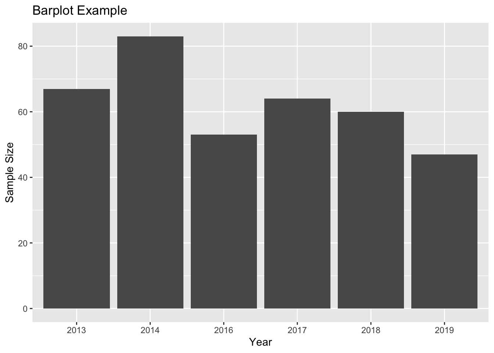 In this case, I would strongly argue that a line plot is much more appropriate, because it captures the fact that “year” is NOT a discrete category and shows that neighbouring years are connected:
sampleSize$Year <- as.numeric(as.character(sampleSize$Year))
ggplot(sampleSize, aes(x = as.numeric(Year), y = SampleSize)) +
geom_line() +
geom_point() +
labs(title = "A better plot", x = "Year", y = "Sample Size")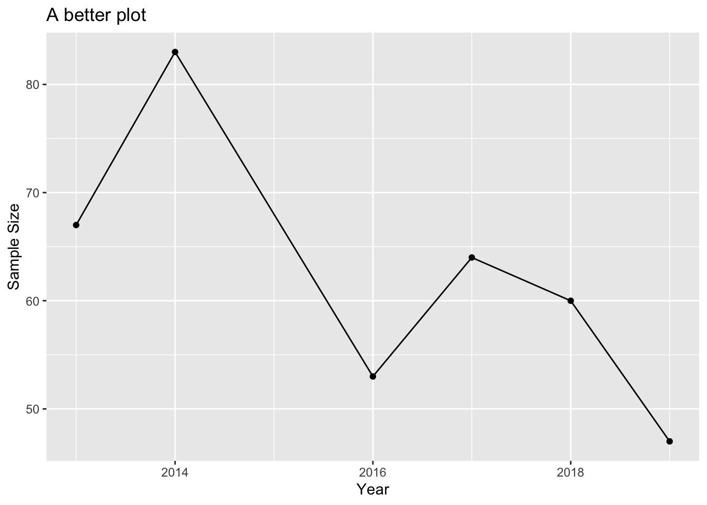
Weissgerber TL, Milic NM, Winham SJ, Garovic VD (2015) Beyond Bar and Line Graphs: Time for a New Data Presentation Paradigm. PLoS Biol 13(4): e1002128. doi:10.1371/journal. pbio.1002128↩︎